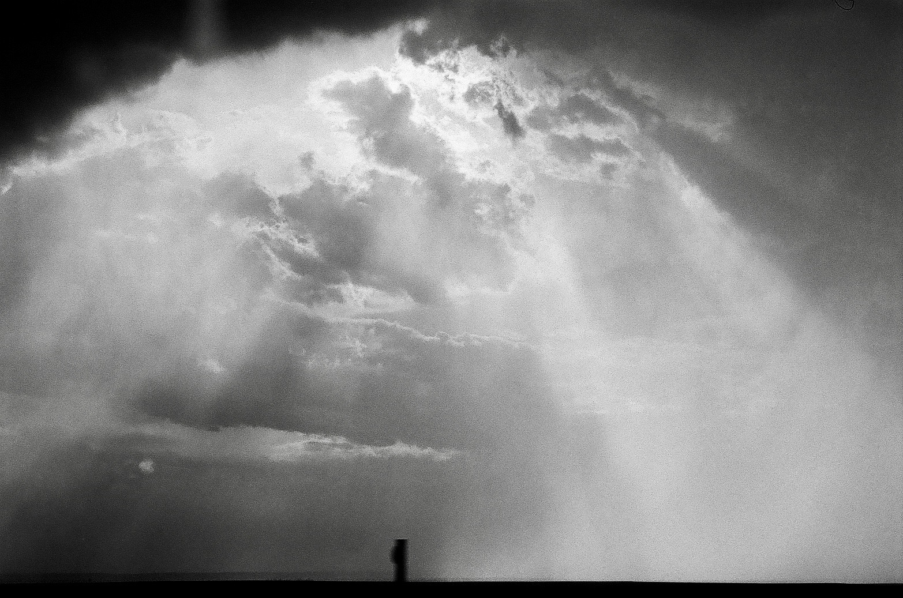

MUSE
About
Current Issue
Past Issues
Active Listening
Contact

Welcome to the UCLA Musicology Department's first undergraduate research journal, MUSE!
Join the Active Listening Club!
Follow us on Spotify!
❮
❯